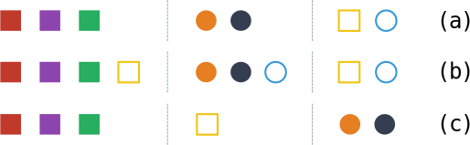
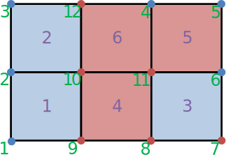
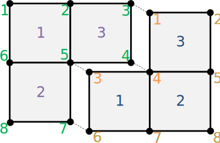
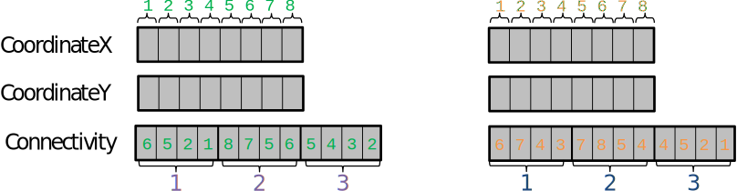
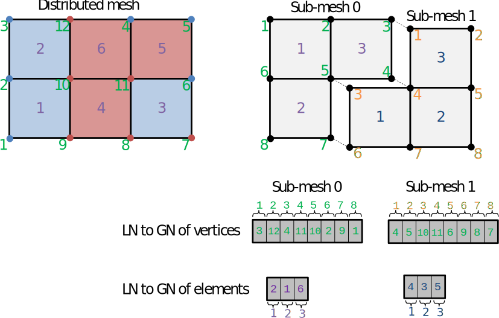
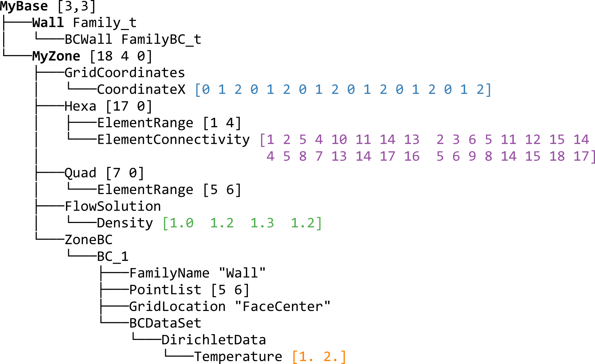
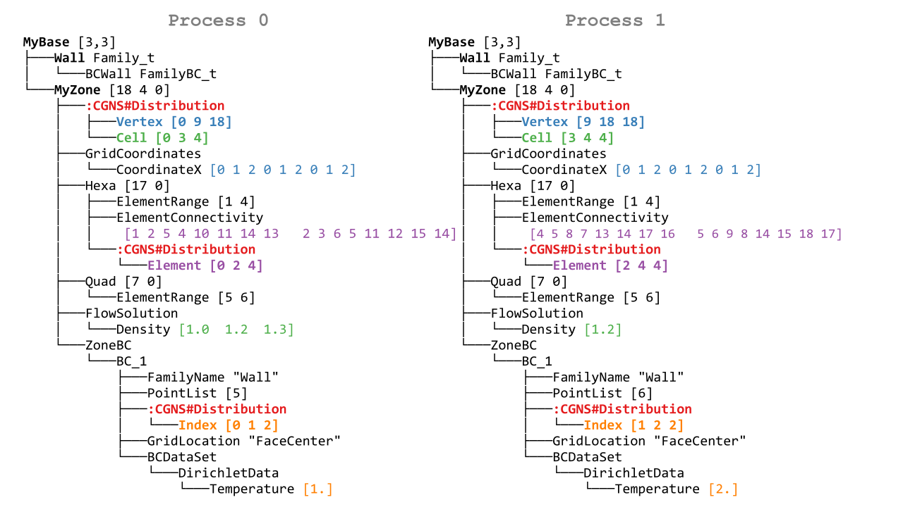
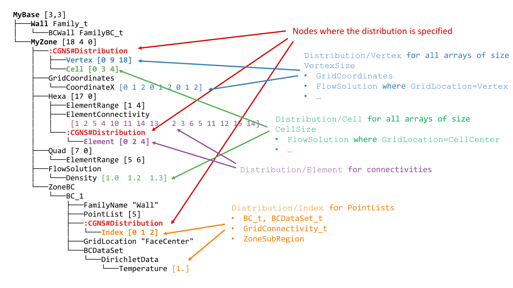
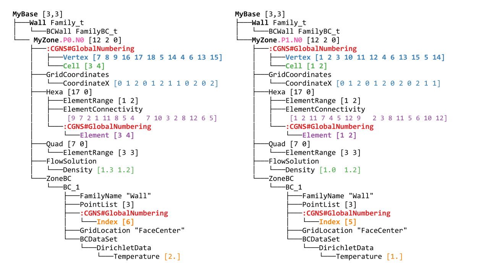
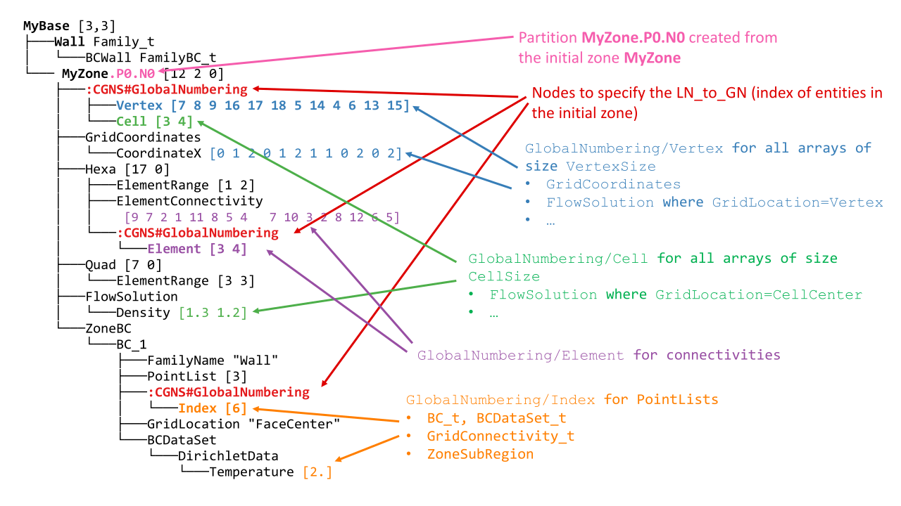

Introduction¶
These section introduces the core concepts of distributed and partitioned data used in Maia, and their application to define parallel CGNS trees.
Core concepts¶
Dividing data¶
Global data is the complete data that describes an object. Let’s represent it as the following ordered shapes:
Now imagine that you want to split this data into N pieces (N=3 for the next illustrations). Among all the possibilities, we distinguishes two ways to do it:
Preserving order: we call such repartition distributed data, and we use the term block to refer to a piece of this distributed data.
Several distributions are possible, depending on where data is cut, but they all share the same properties:
the original order is preserved across the distributed data,
each element appears in one and only one block,
a block can be empty as long as the global order is preserved (b).
Taking arbitrary subsets of the original data: we call such subsets partitioned data, and we use the term partition to refer to a piece of this partitioned data.
Due to this relaxed constraint, there is much more admissible splits since we allow in our definition the following cases:
an element can appear in several partitions, or several times within the same partition (b),
it is allowed that an element does not appear in a partition (c).
Such repartitions are often useful when trying to gather the elements depending on some characteristics: on the above example, we created the partition of squared shaped elements, round shaped elements and unfilled elements (b). Thus, some elements belong to more than one partition.
A key point is that no absolute best way of diving data: depending of what we want to do with the data, one of the way to divide it may be more adapted. In the previous example:
distributed data is fine if you want to count the number of filled shapes: you can count in each block and then sum the result over the blocks.
Now assume that you want to renumber the elements depending on their shape, then on their color: if partitioned data (b) is used, partitions 1 and 2 could independently order their elements by color since they are already sorted by shape 1.
Numberings¶
In order to describe the link between our divisions and the original global data, we need to define additional concepts.
For distributed data, since the original ordering is respected, the link with the global data is totally implicit: we just need to know the number of elements in each block or, equivalently, the distribution array of the data. This is an array of size N+1 indicating the bounds of each block. By convention, distribution array starts at 0 and uses semi-open intervals.
With this information, the global number of the jth element in the ith block is given by \(\mathtt{dist[i] + j + 1}\).
On the contrary, for partitioned data, we have to explicitly store the link with the global data: we use a local to global numbering array (often called LN_to_GN for short). Each partition has its own LN_to_GN array whose size is the number of elements in the partition.

Then, the global number of the jth element in the ith partition is simply given by \(\mathtt{LN\_to\_GN[i][j]}\).
For any global data, these additional informations allow to create a mapping beetween global data, partitioned data and distributed data. Thus, it is always possible to reconstruct one of the views from another one.
Application to MPI parallelism¶
The concepts introduced above make all sense in the context of distributed memory computers. In such architecture, the global data is in fact never detained by a single proc (it would be too heavy): we always use a distributed or partitioned view of this data. Using a good repartition is often the key of a well balanced algorithm.
In the distributed view, we produce as much blocks as the number of MPI processes. Each process holds its own block, and the distribution array, of size n_rank+1, is know by each process.
In the partitioned view, we often produce one partition per process; but it can sometime be useful to put several partitions on a given process. Each process holds the data associated to its partition, including the related LN_to_GN arrays (LN_to_GN related to the other partitions are not know by the current process).
The ParaDiGM library provides some low level methods to exchange data between the partitioned and distributed views in a MPI context, with options to deal with redundant elements, create new distributions, manage variable strides, etc.
Application to meshes¶
Until now, we have seen the definition of distributed and partitioned data for a single array of global data. Let see how to apply these concepts to a basic CFD mesh.
Consider the following 12-vertices (green numbers), 6-quads (purple numbers) mesh and assume that it is described by a cell to vertex connectivity. Thus, the mesh file defines 3 global arrays:
the CoordinateX and CoordinateY arrays, each one of size 12
the Connectivity array of size 6*4 = 24
If we have 2 processes at our disposal, a parallel way to load this mesh is to
distribute all the vertex-related entities with a distribution array of [0,6,12]
and all the element-related entities with a distribution array of [0,3,6] 2:
Then, the blue part of the arrays will be stored on the first process and the red part on the second process. Looking back at the original mesh, this correspond to the following distributed meshes:
with the blue entities stored on the first process, and the red ones on the second process.
Notice that the distributed mesh is not suited for solver computation. For instance, cells on the domain treated by the first process are not connex. Worst yet, vertex and element quantities are distributed independently. Take a look at cell 1: it is blue so it belongs to process 0. However,its vertices 9 and 10 are on process 1, this means that there coordinates are not accessible directly on process 0. For these reasons, we want to properly partition our mesh, such as this:
Now we have two semi-independent meshes and we can reason about each element with all its associated data present on the same process. This partitioned view of the mesh has the two following properties:
Coherency: every data array is addressable locally,
Connexity: the data represents geometrical entities that define a local subregion of the mesh.
We want to keep the link between the base mesh and its partitioned version. For that, we need to store global numbering arrays, quantity by quantity:
For example, for sub-mesh 0, we can check that element number 3 is actually element number 6 of the original mesh. We can also see that vertex 3 of sub-mesh 0, and vertex 1 of submesh 1 are actually the same, that is, vertex 4 of the global mesh.
Thanks to these global numbering, any quantity computed on the partitioned meshes (such as a vertex based field) can then be transfered to the corresponding distributed vertex, before writting back the results.
Maia CGNS trees¶
Overview¶
Since Python/CGNS trees describe CFD meshes, we can apply the previous concepts to define parallel trees.
A full tree is a tree as it is inside a CGNS file, or how it would be loaded by only one process. A full tree is global data.
A dist tree is a CGNS tree where the tree structure is replicated across all processes, but array values of the nodes are distributed, that is, each process only stores a block of the complete array. See Distributed trees.
A part tree is a partial tree, i.e. a tree for which each zone is only stored by one process. Each zone is fully stored by its process. See Partitioned trees.
A size tree is a tree in which only the size of the data is stored. A size tree is typically global data because each process needs it to know which block of data it will have to load and store.
([Legacy] A skeleton tree is a collective tree in which fields and element connectivities are not loaded)
As explained in previous section, the standard full tree does not make sense in the context of a MPI parallel application: all the trees encountered within the execution of maia are distributed trees or partitioned trees. The next section describe the specification of these trees.
Specification¶
Let us use the following tree as an example:
This tree is a global tree. It may appear like that on a HDF5/CGNS file, or if loaded entirely on one process as a Python/CGNS tree.
Distributed trees¶
A dist tree is a CGNS tree where the tree structure is replicated across all processes, but array values of the nodes are distributed, that is, each process only stores a block of the complete array.
If we distribute our tree over two processes, we would then have something like that:
Let us look at one of them and annotate nodes specific to the distributed tree:
Arrays of non-constant size are distributed: fields, connectivities, PointLists. Others (PointRanges, CGNSBase_t and Zone_t dimensions…) are of limited size and therefore replicated on all processes with virtually no memory penalty.
On each process, for each entity kind, a partial distribution is stored, that gives information of which block of the arrays are stored locally.
For example, for process 0, the distribution array of vertices of MyZone is located at MyBase/MyZone/Distribution/Vertex and is equal to [0, 9, 18]. It means that only indices in the semi-open interval [0 9) are stored by the dist tree on this process, and that the total size of the array is 18.
This partial distribution applies to arrays spaning all the vertices of the zone, e.g. CoordinateX.
More formally, a partial distribution related to an entity kind E is an array [start,end,total_size] of 3 integers where [start:end) is a closed/open interval giving, for all global arrays related to E, the sub-array that is stored locally on the distributed tree, and total_size is the global size of the arrays related to E.
The distributed entities are:
- Vertices and Cells¶
The partial distribution are stored in Distribution/Vertex and Distribution/Cell nodes at the level of the Zone_t node.
Used for example by GridCoordinates_t and FlowSolution_t nodes if they do not have a PointList (i.e. if they span the entire vertices/cells of the zone)
- Quantities described by a PointList or PointRange¶
The partial distribution is stored in a Distribution/Index node at the level of the PointList/PointRange
For example, ZoneSubRegion_t and BCDataSet_t nodes.
If the quantity is described by a PointList, then the PointList itself is distributed the same way (in contrast, a PointRange is fully replicated across processes because it is lightweight)
- Connectivities¶
The partial distribution is stored in a Distribution/Element node at the level of the Element_t node. Its values are related to the elements, not the vertices of the connectivity array.
If the element type is heterogenous (NGon, NFace or MIXED) a Distribution/ElementConnectivity is also present, and this partial distribution is related to the ElementConnectivity array.
Note
A distributed tree object is not norm-compliant since most of its arrays are partial: on the previous example, CoordinateX array on rank 0 has a length of 9 when MyZone declares 18 vertices. However, the union of all the distributed tree objects represents a norm-compliant CGNS tree.
Partitioned trees¶
A part tree is a partial CGNS tree, i.e. a tree for which each zone is only stored by one process. Each zone is fully stored by its process.
If we take the global tree from before and partition it, we may get the following tree:
If we annotate the first one:
A part tree is just a regular, norm-compliant tree with additional information (in the form of GlobalNumbering nodes) that keeps the link with the unpartitioned tree it comes from. Notice that the tree structure is not necessarily the same across all processes.
The GlobalNumbering nodes are located at the same positions that the Distribution nodes were in the distributed tree.
A GlobalNumbering contains information to link an entity in the partition to its corresponding entity in the original tree. For example, the element section Hexa has a global numbering array of value [3 4]. It means:
Since it is an array of size 2, there is 2 elements in this section (which is confirmed by the ElementRange) ,
The first element was the element of id
3in the original mesh,The second element was element
4in the original mesh.
Naming conventions¶
When partitioning, some nodes are split, so there is convention to keep track of the fact they come from the same original node:
Zone_t nodes : MyZone is split in MyZone.PX.NY where X is the rank of the process, and Y is the id of the zone on process X.
Splitable nodes (notably GC_t) : MyNode is split in MyNode.N. They appear in the following scenario:
We partition for 3 processes
Zone0 is connected to Zone1 through GridConnectivity_0_to_1
Zone0 is not split (but goes to process 0 and becomes Zone0.P0.N0). Zone1 is split into Zone1.P1.N0 and Zone1.P2.N0. Then GridConnectivity_0_to_1 of Zone0 must be split into GridConnectivity_0_to_1.1 and GridConnectivity_0_to_1.2.
Note that partitioning may induce new GC_t internal to the original zone being splitted. Their name is implementation-defined and those nodes do not have a GlobalNumbering since they did not exist in the original mesh.
Maia trees¶
A CGNS tree is said to be a Maia tree if it has the following properties:
For each unstructured zone, the ElementRange of all Elements_t sections
are contiguous
are ordered by ascending dimensions (i.e. edges come first, then faces, then cells)
the first section starts at 1
there is at most one section by element type (e.g. not possible to have two QUAD_4 sections)
Notice that this is property is required by some functions of Maia, not all of them!
A Maia tree may be a global tree, a distributed tree or a partitioned tree.
Footnotes
- 1
Actually, such algorithm could be written for distributed data, but is less intuitive and require more knowledge of what if happening on the other blocks.
- 2
Other distributions are possible : we could, for example, affect all the CoordinateX array on the first process (using the distribution array
[0,12,12]) and the CoordinateY array on the second, but we would have to manage a different distribution for each array.